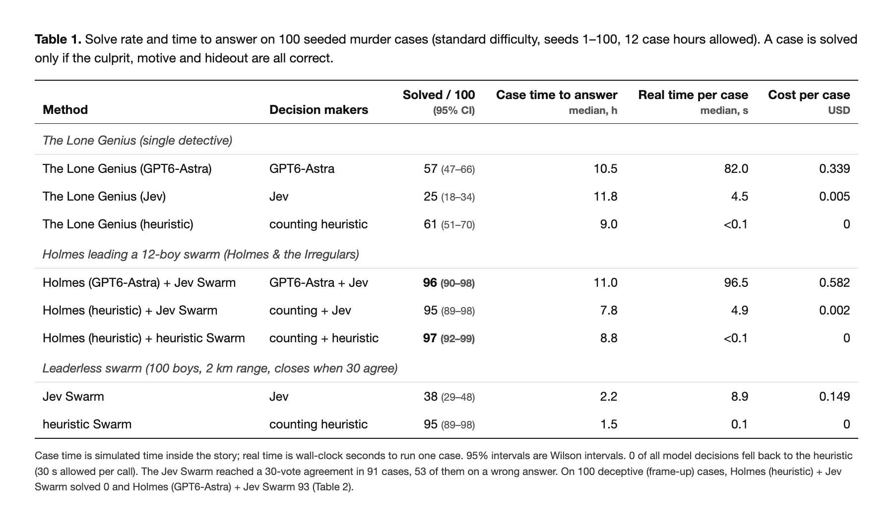
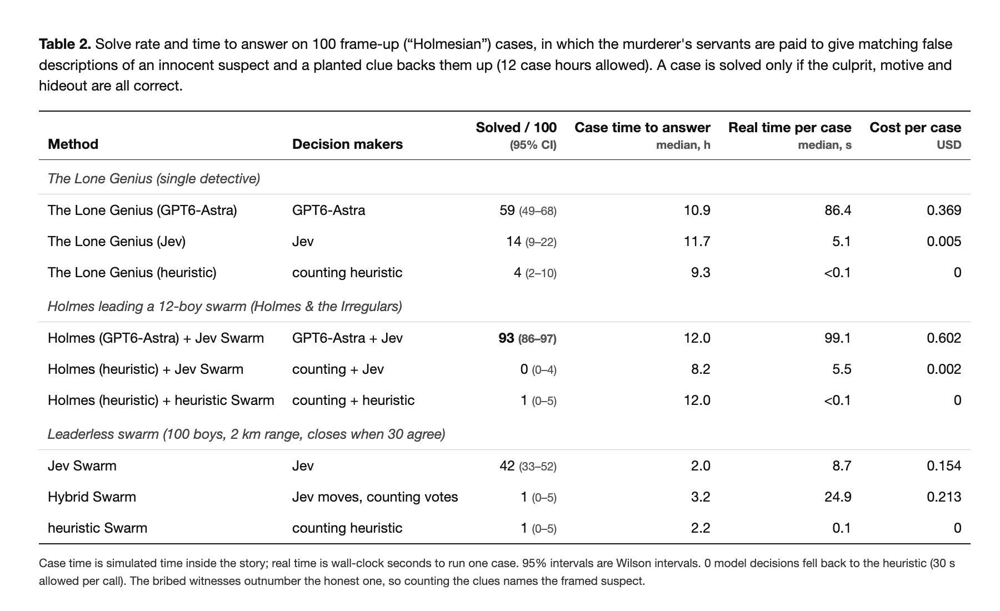
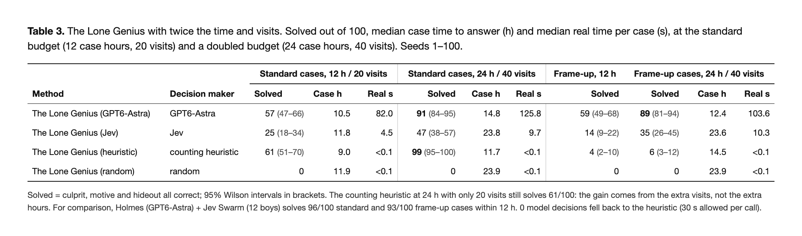

One Leader, Many Minds: Why a Reasoning Leader with an AI Swarm Wins
A Sherlock Holmes detective game study. A large reasoning model (GPT6-Astra) leading a swarm of small, fast agents (Jev) solved 96 of 100 standard murder cases and 93 of 100 cases built on lies, far ahead of the Astra model alone (57, 59) and the swarm alone (38, 42).
The question. Holmes never worked alone: his street boys, the Baker Street Irregulars, could "go everywhere, see everything." AI faces the same choice: one large reasoning model, or a swarm of small, fast agents? We tested both, and the combination, in The Irregulars.
Preliminaries. Each case is a simulated Victorian London: 100 addresses, 10 suspects, one lead per address (a witness, a footprint, a red herring or a lie). A case is solved only if the culprit, motive and hideout are all right within 12 case hours. Three detectives play every case:
- Holmes (GPT6-Astra) + Jev Swarm: GPT6-Astra stays at 221B and plans; 12 Jev boys run the errands, each deciding its own steps, and report back.
- The Lone Genius (GPT6-Astra): one large reasoning model takes a cab from door to door, 20 visits.
- Jev Swarm: 100 small, fast Jev agents and no leader. They share clues with neighbours and vote; the case closes when 30 agree.
The finding. A reasoning leader with a swarm wins. The swarm supplies coverage, many agents searching in parallel; the leader supplies judgment, deciding what the evidence means. How much judgment is needed depends on how hard the analysis is:
- Honest evidence (standard cases): coverage is the bottleneck, and a swarm under a simple central rule is enough.
- Conflicting evidence (frame-ups, where witnesses lie): you need both. Neither alone is enough, and a counting rule fails completely.
The data. Every number comes from fully logged runs; no model decision fell back to a scripted rule. Any case can be replayed on the results page.
1. Case Study: The Soho Physician. How Does Each Technique Perform?
The case. Case 57: Florence Fenwick, a physician, is found dead in Soho. The truth: Beatrice Jessop, out of revenge, hiding in an opium den in Kensington.
Holmes (GPT6-Astra) + Jev Swarm solves it. Holmes's first order: "Wiggins, begin with the death scene, Florence's home, and independent witnesses. Record exact observations, not rumours." By 2½ hours his boys have brought back the heavy bootprints and a knife sold to a right-handed buyer. Holmes notes that "Maud's incompatible alibis demand independent checking" and sends boys to recheck them. By 7½ hours the alibi holds and two newspaper cuttings point to revenge. At 10½ hours he names Beatrice Jessop, revenge, Kensington. Solved, in about two minutes of real time.
The Lone Genius reasons well but runs out of doors. Its first stop yields the revenge motive. The heavy bootprints at the scene "narrow the suspects to Ashdown, Fenwick, Esterby, Wetherell and Jessop," and by midday it has found the opium den. But the clue that separates the five suspects, the right-handed knife buyer, sits at an address it never reaches. After 20 visits and 10½ hours it must guess, and names the wrong woman. Unsolved.
The Jev Swarm is fast but votes too early. At 3h 15m the first boy commits to a full answer, and within an hour it snowballs from 1 boy to 33 as neighbours copy it. At 4h 15m, 33 boys agree on Prudence Wetherell, revenge, Kensington, and the case closes. The motive and hideout are right; the culprit is a woman who merely wore the right boots. Unsolved.
Scatter and gather, side by side. Figure 1 replays all three with every decision point marked: GPT6-Astra's decisions as diamonds, each Jev boy's as a tick on its own lane. On case 57, Holmes's boys make 125 small "where next?" choices and Astra makes 11 planning decisions. The Lone Genius spends one of its 21 Astra decisions on every stop. The Jev Swarm makes about 1,700 small decisions, but none of them weighs all the evidence.
The lesson of one case. The genius weighs evidence well but cannot knock on enough doors. The swarm covers the city but cannot weigh what it finds. The leader with a swarm gets both: twelve pairs of legs to find the decisive clue, and one mind to weigh it.
2. Standard Cases: The Leader with a Swarm Wins, and a Simple Centre Is Enough
The winner. Holmes (GPT6-Astra) + Jev Swarm solves 96 of 100 standard cases (Table 1), in a median 11.0 case hours and 97 seconds of real time.

The gap. The Lone Genius (GPT6-Astra) solves 57, 39 fewer. The Jev Swarm solves 38, 58 fewer.
Why the Lone Genius falls short: coverage. It reaches only 20 addresses, one after another. In 59 cases it runs out of visits or hours before it holds the deciding clue (section 4).
Why the Jev Swarm falls short: judgment. It is by far the fastest (2.2 case hours, 9 seconds), but it reaches a 30-vote agreement in 91 cases and 53 of those agreements are wrong. A few boys misread a clue, their neighbours copy the confident vote, and the error snowballs before anyone checks. Small agents are good searchers and weak judges.
A smaller Jev Swarm does worse. We checked a leaderless Jev Swarm of 12 boys, the size of Holmes's team, with the same range and the same 30% quorum (4 votes). On 29 standard cases it solved none and never reached a quorum. On the same 29 cases, the 100-boy Jev Swarm solved 5, and Holmes leading 12 Jev boys solved 27. This is a partial check (the run stopped early when our model credits ran out, and only the 29 complete runs count), but the direction is clear. Left to themselves, the 12 boys check a median of 13 addresses and find 15% of the key evidence, against 100 addresses and all of it for the 100-boy swarm. The same 12 boys are strong only when Holmes directs them.
What the baselines show. Honest cases are easy to analyse. Every true fact appears at two addresses and each lie at one, so the corroborated answer is the right one. A Holmes that only divides the work and counts clues matches GPT6-Astra: 95 with Jev boys and 97 with scripted boys, against 96, at $0.002 or less per case instead of $0.58. A leaderless swarm whose boys count, rather than copy, also reaches 95.
Finding 1. When the analysis is simple, performance comes from the architecture: parallel coverage plus a simple aggregation rule. A strong reasoner at the top adds little.
3. Frame-Up Cases: When Somebody Lies, You Need Both
The setup. In 100 frame-up cases the murderer pays servants to describe an innocent man and swear their master never left home, and a planted clue backs them up. The lie now appears more often than the truth; only two honest witnesses saw the bribe paid.
The winner. Holmes (GPT6-Astra) + Jev Swarm still solves 93 of 100 (Table 2).

The gap. The Lone Genius solves 59, 34 fewer. The Jev Swarm solves 42, 51 fewer. Every counting variant collapses: 0 for a counting Holmes over Jev boys, 1 with counting boys, and 1 for a leaderless counting swarm.
Why counting fails. Counting follows the majority, and the majority is lying. GPT6-Astra asks who is speaking. In one frame-up Holmes wrote: "Pargeter's servants supply both his alibi and evidence against Leopold; the dry snuff-box suggests planting. Pargeter merits suspicion, not accusation."
Why the others fall short. The Lone Genius can see through the lies, but it still misses evidence it never reaches. The Jev Swarm beats every counting player, because some boys doubt the testimony, but without a leader it still often agrees on the framed man.
Finding 2. When the analysis is hard, coverage and judgment are both necessary and neither is sufficient. Without the swarm, the reasoner misses evidence (59). Without the reasoner, the swarm is misled (42; counting, 0 to 1). Together they solve 93.
4. Why the Lone Genius Loses: Efficiency, Not Capability
The winner on efficiency. Holmes (GPT6-Astra) + Jev Swarm solves 96 standard cases within the 12-hour limit, at a median 11.0 case hours, 97 seconds and $0.58 per case.
The genius is capable. Case 57 showed it reasoning well; it ran out of doors. Of its 43 standard failures, 32 had the motive wrong, 17 the culprit and none the hideout. Given twice the budget, 24 case hours and 40 visits (Table 3), it climbs from 57 to 91 on standard cases and from 59 to 89 on frame-ups. Visits matter, not hours: a counting detective at 24 hours with 20 visits stays at 61, and with 40 visits reaches 99.

But it is less efficient. On standard cases:
| Solved | Case time (median) | Real time (median) | Cost per case | |
|---|---|---|---|---|
| Holmes (GPT6-Astra) + Jev Swarm, 12 h | 96 | 11.0 h | 97 s | $0.58 |
| The Lone Genius (GPT6-Astra), 24 h / 40 visits | 91 | 14.8 h | 126 s | $0.60 |
The gap, in numbers. Even with double the budget, the Lone Genius solves 5 fewer cases. It needs 35% more case time (3.8 hours, past the 12-hour limit) and 30% more real time (29 seconds), at about the same cost. Holmes's boys cover a median of 74 addresses in parallel; the genius covers at most 40, one cab ride at a time. On frame-ups the gap narrows: 89 solved in 12.4 h and 104 s at $0.52, against 93 in 12.0 h and 99 s at $0.60. There it is a little cheaper, but still slower, less accurate and over the limit.
Why. The lone model is short of efficiency, not capability: one reasoner does all the legwork in sequence. A cheap, fast swarm buys parallel coverage, and a strong leader turns it into the right verdict.
What This Suggests
Holmes knew it in 1890. The street boys were never meant to solve the case, only to find the pieces; the genius was never meant to walk every street, only to see the shape the pieces make.
The design rule. Divide the labour by how hard the analysis is:
- Always use the swarm for coverage. Small, fast agents make the many local "where next?" decisions in parallel, far more efficiently than one reasoner taking them one at a time.
- For simple analysis, a simple centre will do. If the evidence can be taken at face value, divide the work and aggregate it with a rule.
- For hard analysis, put a reasoner at the centre. When sources conflict or deceive, a crowd's vote and a counting rule both follow the majority. A strong reasoner has to make the judgment.
The answer. One genius, or many minds? One genius leading many minds.
Methods in brief. Cases are generated from a seed: 100 addresses on a street graph, 10 suspects with six visible traits, 6 motives, 8 candidate hideouts. In standard cases each true key fact appears at two addresses and each lie at one; frame-up cases add coordinated lies, a planted clue, timed alibis and witnesses to the bribe, and each case is checked to be solvable by a careful reader. All approaches get 12 case hours. Holmes's boys walk; the lone genius takes cabs. The Jev Swarm uses a 2 km range and closes at 30 identical votes. Model calls were allowed 30 seconds; zero decisions fell back to a rule. Wilson 95% intervals are in the tables.
Watch the trailer · Results, and a replay of every case (try case 57): every move, clue and vote →